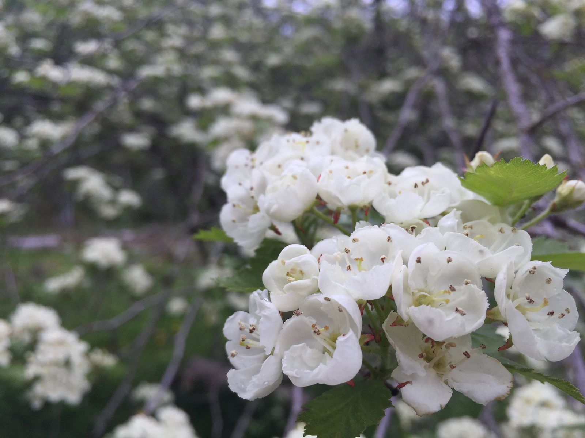
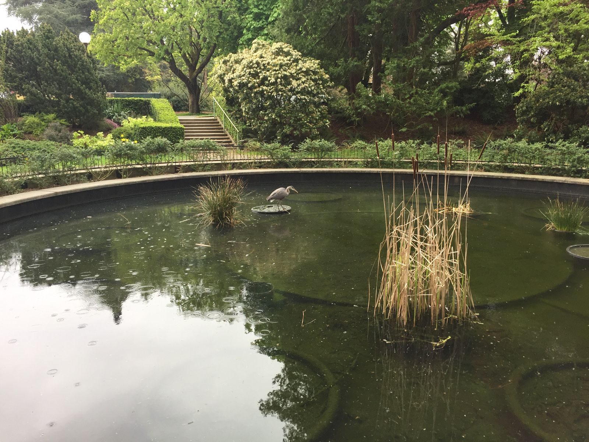

Last Day in Seattle
It is here. The last day of my trip. Tonight I fly home at midnight.

My day in Seattle has so far been pretty low key. I slept until about 9:30. I filled up the car's gas tank. I got a cappuccino. I ate a huge spring salad at a vegetarian restaurant. I wandered the Washington Park Arboretum and Volunteer Park. For my last ice cream, I chose Sweet Alchemy Ice Creamery in the University District. I wandered the University Bookstore and bought a book that caught my eye first at Powell's in Portland. As has happened to me several times since I got to Seattle, there was light rain and I forgot my raincoat and umbrella.

Tonight, I am making dinner with several college friends for a student group before I head to the airport. As catching up with friends has been the best part of my trip, it's a fitting end to my west coast travels.